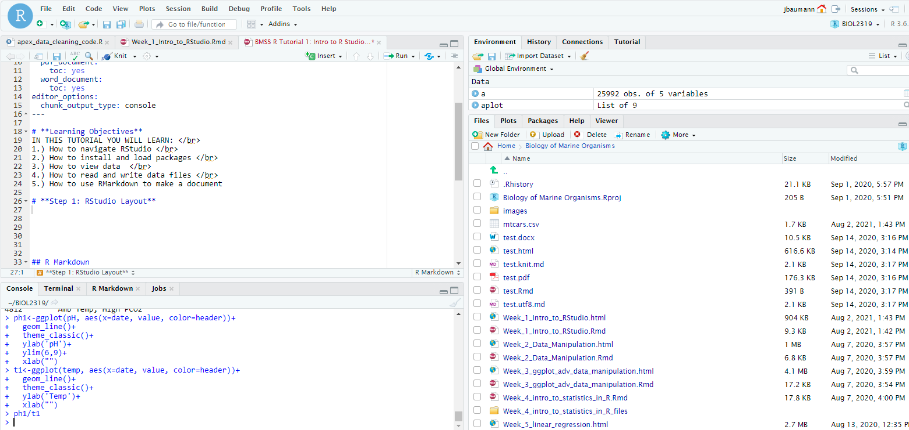
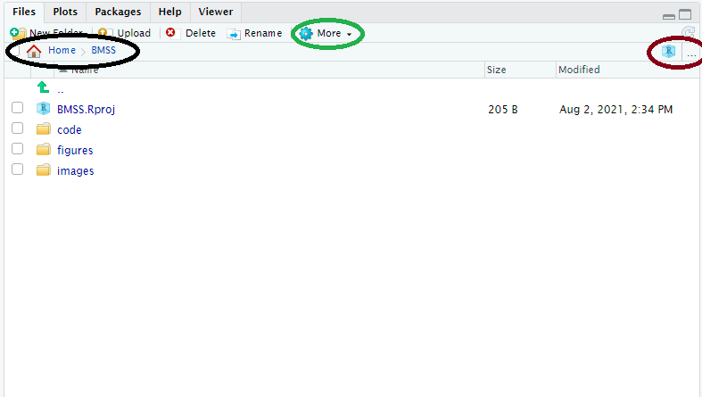
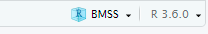
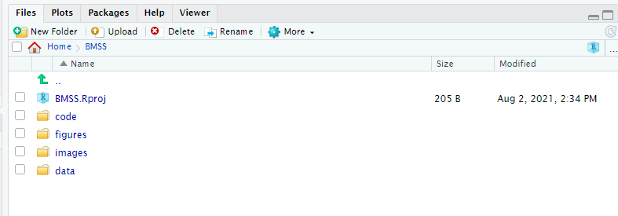

getwd()[1] "C:/Users/Justin Baumann/Desktop/r_for_bioeco/intro_r_for_bio_eco"Justin Baumann
IN THIS TUTORIAL YOU WILL LEARN:
1.) How to access and/or install R and RStudio
2.) How to navigate RStudio
3.) How to set and change the working directory
4.) How to setup an RStudio Project
Books and workshops for learning tidyverse
A nice step by step walkthough of Tidyverse functions
Want to TRY some stuff on your own? Use the RStudio.cloud primers
The best way to learn is to GOOGLE IT and try stuff
In this course we will learn how to program in R (a coding language) using RStudio (a coding environment). RStudio makes using R easier and more user friendly!
We will also learn how to make pdf and html output files that include code and outputs (tables and graphs).
These are handy tools for reporting data and even for writing papers! We will use Quarto to do this (a new tool from the folks who designed RStudio).
Your lab reports will all be built using Quarto.
You have options:
1. Install R and RStudio on your device(s) and use it locally
2. Sign up for a posit cloud account here: https://posit.cloud/plans/free. Posit Cloud is a way to access RStudio online without downloading and installing anything.
To install R, we will use this link: install R
1.) Choose the operating system you use (macosx or windows)
2.) Click the blue .pkg link that aligns with your computer and operating system (ask questions if needed)
3.) Follow instructions
1.) Click this link and follow instructions
2.) OPEN RStudio (not R). Click on the logo that is a white R inside a blue circle (RStudio). We never need to open R, we can use RStudio.
Where you will write your script(s). This is where we should be writing our code! It can be run, commented, and saved here.
Here you can run single lines of code and/or see error messages, warnings, and other outputs. Code should not be written here unless it is simple / for testing! Anything worth keeping should go in the script at the top left!
Here you will be able to see the dataframes you have read into R or created (using the “Environment tab”). The other tabs are less useful for us at this stage, but feel free to explore them! Note: The Broom icon can be used to clear dataframes from your environment. You can minimize or maximize this and each other quadrant using the symbols at the top right of the quadrant (a collapsed page next to a full page)
This is the second most important quadrant (behind top left) and we can change the working directory here very easily. Here we can see the files in our present working directory (we will learn about that next!) We can also see any plots we make in the plots tab. VERY importantly, we can see the packages we have loaded or installed in the packages tab. This will be useful to you! You can also use this tab to search the internal Help dictionary, though I will note that the internet is often more helpful!
You can use the top bar in RStudio much like in any other program. I’ll let you explore that on your own. Notably, in the top right corner of the top bar you will see an ‘R’ in a blue box. This is where you can set the project you are working form. Using projects is great because it allows you an easy way to compartmentalize your code, data, figures, and working directory for a single project all in one place! We will get to this shortly.

1.) We can use the getwd() command!
2.) We can also use the Bottom Right “Files” tab

Here our working directory (and it’s file path) can be located in the black circle. We can manually change the working directory by using the ‘…’ in the brown circle to find any folder on our computer (or attached cloud folders), navigating to it, and then using the ‘More’ Cog in the green circle to “Set as working directory”
3.) An alternative approach to finding the working directory in the “Files” tab. Using the “More” cog, we can select “Go to working directory”
1.) Using the “Files” tab to set manually: a.) Using the ‘…’ in the ‘Files’ tab you can select any directory (folder) on your computer. You can also set a google drive, box, dropbox, or other shared folder as your working directory if you’d like (as long as you are syncing a folder between the cloud and your computer – ASK me if you have questions about this!) b.) Once you navigate to a directory you still need to SET IT as your working directory. You do this in the “More” cog– select “Set as working directory”
2.) Set working directory with code: We use the ‘setwd()’ function for this. Below is an example. You will need to replace the path details with your own!

RStudio Projects are a great way to compartmentalize your coding work! You can store your code, outputs, input files, figures, etc all in one directory (with subdirectories). When you load your R Project, R will automatically load the last scripts you were working with on that project as well as the dataframes and items you have read in (your environment will be ready to go!). It will also navigate to the correct working directory automatically :) This will make your life easier!
To make an RStudio Project
1.) Create a folder on your computer (or cloud storage) that will serve as the MAIN directory for your project. Within that folder I recommend you make subdirectories for all of your R related inputs and outputs. Maybe something like I have here:

2.) Once you have a MAIN directory folder created (whether you’ve made subdirectories or not) you can create a project! Set your main folder as your working directory. Next, navigate to the TOP RIGHT of your screen and select the down arrow next to the Big “R” in a blue box. NOW, select “New Project” –> Existing directory –> Name the project and hit done! At this point you will see a .Rproj file appear in your MAIN directory. This means you did it right :) This .Rproj file is how you save all of your project info. It autosaves and when you select your project (Again, TOP RIGHT of your screen, select the down arrow next to the R in the blue box and then select your project name) it will load up your scripts, environment, and set your working directory as the MAIN folder. You can navigate VERY easily from here :)